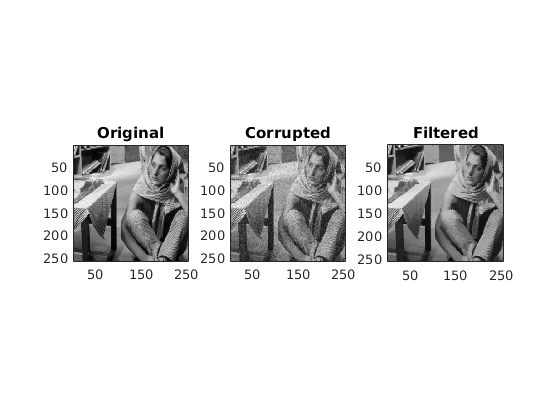
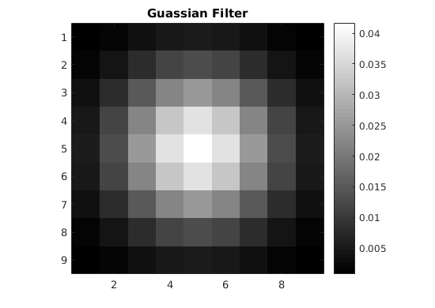

Contents
MyMainScript
tic;
Image Sharpening
img1 = load('../data/barbara.mat');
img1 = img1.imageOrig;
myPatchBasedFiltering(img1);
toc;
set_sigma =
0.8300
set_sigma =
0.8300
rmsd =
3.0463
Elapsed time is 286.852042 seconds.


function myPatchBasedFiltering( img )
hwindow = 10;
sig = 0.66;
G = fspecial('gaussian', [2*hwindow+1 2*hwindow+1], sig);
previmg= imfilter(img,G);
[m n] = size(previmg);
index_x = 1:2:m;
index_y = 1:2:n;
previmg = previmg(index_x, index_y);
origimg=previmg;
[m n] =size(previmg);
previmg=previmg+sqrt(0.3*(max(max(previmg))-min(min(previmg))))*randn(m,n);
guassian_filter=fspecial('gaussian', [9 9], 2);
set_sigma=0.83
newimg=previmg;
[m n p] = size(newimg);
for i=1:m
for j=1:n
leftLimitPatch1=min(4,j-1);
rightLimitPatch1=min(4,n-j);
topLimitPatch1=min(4,i-1);
bottomLimitPatch1=min(4,m-i);
leftLimitWindow=max(1,j-12);
rightLimitWindow=min(n,j+12);
topLimitWindow=max(1,i-12);
bottomLimitWindow=min(m,i+12);
weight=zeros(bottomLimitWindow-topLimitWindow, rightLimitWindow-leftLimitWindow+1);
for k=topLimitWindow:bottomLimitWindow
for l=leftLimitWindow:rightLimitWindow
leftLimitPatch2=min(min(4,l-leftLimitWindow),leftLimitPatch1);
rightLimitPatch2=min(min(4,rightLimitWindow-l),rightLimitPatch1);
topLimitPatch2=min(min(4,k-topLimitWindow),topLimitPatch1);
bottomLimitPatch2=min(min(4,bottomLimitWindow-k),bottomLimitPatch1);
patch1=previmg(i-topLimitPatch2:i+bottomLimitPatch2,j-leftLimitPatch2:j+rightLimitPatch2);
patch2=previmg(k-topLimitPatch2:k+bottomLimitPatch2,l-leftLimitPatch2:l+rightLimitPatch2);
difference=patch1-patch2;
difference=difference.*guassian_filter(5-topLimitPatch2:5+bottomLimitPatch2,5-leftLimitPatch2:5+rightLimitPatch2);
weight(k-topLimitWindow+1,l-leftLimitWindow+1)=exp(-sum(sum(difference.^2))/(set_sigma*set_sigma));
end
end
newimg(i,j)=sum(sum(weight.*previmg(topLimitWindow:bottomLimitWindow,leftLimitWindow:rightLimitWindow)))/sum(sum(weight));
end
end
set_sigma
rmsd= sqrt(sum(sum((newimg-origimg).^2))/(m*n))
figure;
subplot(1,3,1);
imagesc((origimg/100));
daspect([1 1 1]);
axis tight;
colormap('Gray');
title('Original');
subplot(1,3,2);
imagesc((previmg/100));
daspect([1 1 1]);
axis tight;
colormap('Gray');
title('Corrupted');
subplot(1,3,3);
imagesc((newimg/100));
daspect([1 1 1]);
axis tight;
colormap('Gray');
title('Filtered');
figure;
imagesc(guassian_filter);
daspect([1 1 1]);
axis tight;
colormap('Gray');
title('Guassian Filter');
colorbar;
end